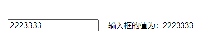

5.computed和watch区别
1. 总述
- computed和watch都是vue中用于监听数据变化的属性
2. computed计算属性
- 如果函数所依赖的属性没有发生变化，从缓存中读取
- 必须有return返回
- 使用方法和data中的数据一样，是类似一个执行方法
3. watch监听器
- watch的函数名必须和data中的数据名一致
- watch中的函数有两个参数，新旧
- watch中的函数是不需要调用的
- 只会监听数据的值是否发生改变，而不会监听数据的地址是否发生改变，要深度监听需要配合
deep:true属性使用 immediate:true页面首次加载的时候做一次监听
4. 区别
- 功能：computed是计算属性，watch是监听一个值的变化而执行对应的回调
- 是否调用缓存：computed函数所依赖的属性不变的时候会调用缓存；watch每次监听的值发生变化的时候都会调用回调
- 是否调用return：computed必须有；watch可以没有
- 使用场景：computed当一个属性受多个属性影响的时候：例如购物车商品结算；watch当以一条数据影响多条数据的时候：例如搜索框
- 是否支持异步：computed函数不能有异步；watch可以。
5. watch的直接监听
<input type="text" v-model="inputValue"> 输入框的值为：{{watchInputValue}}
export default {
data(){
return {
inputValue: '',
watchInputValue: ''
}
},
watch: {
inputValue(newName, oldName){
this.watchInputValue = newName
}
}
}
<input type="text" v-model="inputValue">
输入框的值为：{{watchInputValue}}
export default {
data(){
return {
inputValue: '',
watchInputValue: ''
}
},
watch: {
inputValue：{
handler(newName, oldName){
this.watchInputValue = newName
}
}
}
}
